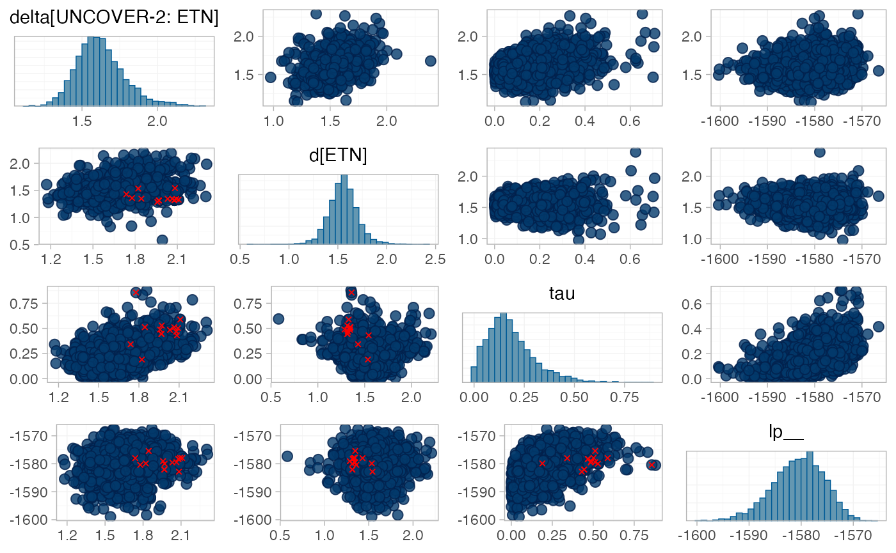

Example: Plaque psoriasis ML-NMR
Source:vignettes/example_plaque_psoriasis.Rmd
example_plaque_psoriasis.Rmd
library(multinma)
#> For execution on a local, multicore CPU with excess RAM we recommend calling
#> options(mc.cores = parallel::detectCores())
#>
#> Attaching package: 'multinma'
#> The following objects are masked from 'package:stats':
#>
#> dgamma, pgamma, qgamma
library(dplyr) # dplyr and tidyr for data manipulation
#>
#> Attaching package: 'dplyr'
#> The following objects are masked from 'package:stats':
#>
#> filter, lag
#> The following objects are masked from 'package:base':
#>
#> intersect, setdiff, setequal, union
library(tidyr)
library(ggplot2) # ggplot2 for plotting covariate distributions
options(mc.cores = parallel::detectCores())Simulated individual patient data (IPD) from trials comparing treatments for plaque psoriasis are found in the data set plaque_psoriasis_ipd. Aggregate data (AgD) are available on a further set of trials, found in the data set plaque_psoriasis_agd. In this vignette, we recreate the multilevel network meta-regression (ML-NMR) analyses performed by Phillippo et al. (2020; see also Phillippo 2019). We will analyse IPD from three studies, UNCOVER-1, UNCOVER-2, and UNCOVER-3 (Griffiths et al. 2015; Gordon et al. 2016), and AgD from one study, FIXTURE (Langley et al. 2014).
pso_ipd <- filter(plaque_psoriasis_ipd,
studyc %in% c("UNCOVER-1", "UNCOVER-2", "UNCOVER-3"))
pso_agd <- filter(plaque_psoriasis_agd,
studyc == "FIXTURE")
head(pso_ipd)
#> studyc trtc_long trtc trtn pasi75 pasi90 pasi100 age bmi pasi_w0 male bsa weight
#> 1 UNCOVER-1 Ixekizumab Q2W IXE_Q2W 2 0 0 0 34 32.2 18.2 TRUE 18 98.1
#> 2 UNCOVER-1 Ixekizumab Q2W IXE_Q2W 2 1 0 0 64 41.9 23.4 TRUE 33 129.6
#> 3 UNCOVER-1 Ixekizumab Q2W IXE_Q2W 2 1 1 0 42 26.2 12.8 TRUE 33 78.0
#> 4 UNCOVER-1 Ixekizumab Q2W IXE_Q2W 2 0 0 0 45 52.9 36.0 FALSE 50 139.9
#> 5 UNCOVER-1 Ixekizumab Q2W IXE_Q2W 2 1 0 0 67 22.9 20.9 FALSE 35 54.2
#> 6 UNCOVER-1 Ixekizumab Q2W IXE_Q2W 2 1 1 1 57 22.4 18.2 TRUE 29 67.5
#> durnpso prevsys psa
#> 1 6.7 TRUE TRUE
#> 2 14.5 FALSE TRUE
#> 3 26.5 TRUE FALSE
#> 4 25.0 TRUE TRUE
#> 5 11.9 TRUE FALSE
#> 6 15.2 TRUE FALSE
head(pso_agd)
#> studyc trtc_long trtc trtn pasi75_r pasi75_n pasi90_r pasi90_n pasi100_r pasi100_n
#> 1 FIXTURE Etanercept ETN 4 142 323 67 323 14 323
#> 2 FIXTURE Placebo PBO 1 16 324 5 324 0 324
#> 3 FIXTURE Secukinumab 150 mg SEC_150 5 219 327 137 327 47 327
#> 4 FIXTURE Secukinumab 300 mg SEC_300 6 249 323 175 323 78 323
#> sample_size_w0 age_mean age_sd bmi_mean bmi_sd pasi_w0_mean pasi_w0_sd male bsa_mean bsa_sd
#> 1 326 43.8 13.0 28.7 5.9 23.2 9.8 71.2 33.6 18.0
#> 2 326 44.1 12.6 27.9 6.1 24.1 10.5 72.7 35.2 19.1
#> 3 327 45.4 12.9 28.4 5.9 23.7 10.5 72.2 34.5 19.4
#> 4 327 44.5 13.2 28.4 6.4 23.9 9.9 68.5 34.3 19.2
#> weight_mean weight_sd durnpso_mean durnpso_sd prevsys psa
#> 1 84.6 20.5 16.4 12.0 65.6 13.5
#> 2 82.0 20.4 16.6 11.6 62.6 15.0
#> 3 83.6 20.8 17.3 12.2 64.8 15.0
#> 4 83.0 21.6 15.8 12.3 63.0 15.3We consider running a ML-NMR adjusting for five potential effect-modifying covariates: duration of psoriasis durnpso, weight weight, previous systemic treatment prevsys, body surface area bsa, and psoriatic arthritis psa.
Setup
Preparing the data
We need to prepare the data so that it is in an acceptable format to run a ML-NMR model. Firstly, we need to handle the binary covariates prevsys and psa. In the IPD, these are coded as TRUE or FALSE, but in the AgD these are coded as percentages (out of 100). We need these to transform both of these sets of variables so that they are numeric and lie in the interval \([0,1]\), so that the variables are compatible across the data sources. Whilst we are here, we also transform body surface area bsa (a percentage) to lie in \([0,1]\), since that will make specifying an appropriate marginal distribution easier later, and rescale weight and duration to aid interpretation of the regression coefficients (in terms of 10 kilos and 10 years respectively). We also add in a trtclass variable, indicating which treatments belong to which classes. Finally, we check for missing values in the IPD.
pso_ipd <- pso_ipd %>%
mutate(# Variable transformations
bsa = bsa / 100,
prevsys = as.numeric(prevsys),
psa = as.numeric(psa),
weight = weight / 10,
durnpso = durnpso / 10,
# Treatment classes
trtclass = case_when(trtn == 1 ~ "Placebo",
trtn %in% c(2, 3, 5, 6) ~ "IL blocker",
trtn == 4 ~ "TNFa blocker"),
# Check complete cases for covariates of interest
complete = complete.cases(durnpso, prevsys, bsa, weight, psa)
)
pso_agd <- pso_agd %>%
mutate(
# Variable transformations
bsa_mean = bsa_mean / 100,
bsa_sd = bsa_sd / 100,
prevsys = prevsys / 100,
psa = psa / 100,
weight_mean = weight_mean / 10,
weight_sd = weight_sd / 10,
durnpso_mean = durnpso_mean / 10,
durnpso_sd = durnpso_sd / 10,
# Treatment classes
trtclass = case_when(trtn == 1 ~ "Placebo",
trtn %in% c(2, 3, 5, 6) ~ "IL blocker",
trtn == 4 ~ "TNFa blocker")
)A small number of individuals have missing covariates:
Since the proportion of missing data is so small, we will simply exclude these individuals from the analysis.
pso_ipd <- filter(pso_ipd, complete)Creating the network
Set up the network, setting the IPD with set_ipd(), AgD (arm-based) with set_agd_arm(), and combining together using combine_network(). We specify the binary pasi75 outcome as r in the IPD, and the count outcome pasi75_r and denominator pasi75_n as r and n in the AgD. We specify the treatment classes with trt_class = trtclass.
pso_net <- combine_network(
set_ipd(pso_ipd,
study = studyc,
trt = trtc,
r = pasi75,
trt_class = trtclass),
set_agd_arm(pso_agd,
study = studyc,
trt = trtc,
r = pasi75_r,
n = pasi75_n,
trt_class = trtclass)
)
pso_net
#> A network with 3 IPD studies, and 1 AgD study (arm-based).
#>
#> ------------------------------------------------------------------- IPD studies ----
#> Study Treatments
#> UNCOVER-1 3: IXE_Q2W | IXE_Q4W | PBO
#> UNCOVER-2 4: ETN | IXE_Q2W | IXE_Q4W | PBO
#> UNCOVER-3 4: ETN | IXE_Q2W | IXE_Q4W | PBO
#>
#> Outcome type: binary
#> ------------------------------------------------------- AgD studies (arm-based) ----
#> Study Treatments
#> FIXTURE 4: ETN | PBO | SEC_150 | SEC_300
#>
#> Outcome type: count
#> ------------------------------------------------------------------------------------
#> Total number of treatments: 6, in 3 classes
#> Total number of studies: 4
#> Reference treatment is: PBO
#> Network is connectedWe can produce a network plot with the plot() method:
plot(pso_net, weight_nodes = TRUE, weight_edges = TRUE, show_trt_class = TRUE) +
ggplot2::theme(legend.position = "bottom", legend.box = "vertical")
Numerical integration for ML-NMR
ML-NMR models define the meta-regression model at the individual level, in exactly the same manner as a full-IPD meta-regression. ML-NMR then incorporates the AgD into the model by integrating this individual-level model over the covariate distribution in each AgD study (Phillippo et al. 2020; Phillippo 2019). Using integration, instead of simply “plugging-in” mean covariate values for the AgD studies, avoids aggregation bias when the link function is not the identity function.
This package utilises numerical integration to incorporate the aggregate data - specifically, quasi-Monte Carlo (QMC) integration with a Gaussian copula (Phillippo et al. 2020; Phillippo 2019). QMC integration is a very general and flexible integration approach, which typically requires far fewer integration points than standard (pseudo-random) Monte-Carlo integration to achieve the same numerical accuracy.1 A Gaussian copula allows us to account for correlations between covariates, which may have any specified marginal distributions.
We now set up the numerical integration for the network. The five covariates that we will consider adjusting for are body surface area bsa, duration of psoriasis durnpso, previous systemic treatment prevsys, psoriatic arthritis psa, and weight weight. We need to choose suitable marginal distributions for these covariates to draw the integration points from. prevsys and psa are binary covariates, so these are given a Bernoulli distribution. bsa is a percentage, so we choose a logit-Normal distribution. We choose Gamma distributions for durnpso and weight to account for skewness. These choices seem to match well the marginal distributions observed in the IPD:
# Get mean and sd of covariates in each study
ipd_summary <- pso_ipd %>%
group_by(studyc) %>%
summarise_at(vars(weight, durnpso, bsa), list(mean = mean, sd = sd, min = min, max = max)) %>%
pivot_longer(weight_mean:bsa_max, names_sep = "_", names_to = c("covariate", ".value")) %>%
# Assign distributions
mutate(dist = recode(covariate,
bsa = "dlogitnorm",
durnpso = "dgamma",
weight = "dgamma")) %>%
# Compute density curves
group_by(studyc, covariate) %>%
mutate(value = if_else(dist == "dlogitnorm",
list(seq(0, 1, length.out = 101)),
list(seq(min*0.8, max*1.2, length.out = 101)))) %>%
unnest(cols = value) %>%
mutate(dens = do.call(first(dist), args = list(x = value, mean = first(mean), sd = first(sd))))
# Plot histograms and assumed densities
pso_ipd %>%
pivot_longer(c(weight, durnpso, bsa), names_to = "covariate", values_to = "value") %>%
ggplot(aes(x = value)) +
geom_histogram(aes(y = stat(density)),
binwidth = function(x) diff(range(x)) / nclass.Sturges(x),
boundary = 0,
fill = "grey50") +
geom_line(aes(y = dens), data = ipd_summary,
colour = "darkred", size = 0.5) +
facet_wrap(~studyc + covariate, scales = "free", ncol = 3) +
theme_multinma()We add integration points to the AgD studies in the network using the add_integration() function. Marginal distributions for each covariate are specified using the distr() function, which takes a cumulative distribution function corresponding to the chosen marginal distribution, and arguments to that distribution as column names in the aggregate data. (Note: This package provides several convenience functions for specifying these distributions, including qgamma() which allows for a parameterisation of the Gamma distribution in terms of mean and standard deviation, qbern() which provides the Bernoulli distribution, and qlogitnorm() which provides the logit-Normal distribution allowing for a parameterisation in terms of mean and standard deviation.) Since we do not know the correlations between covariates in the AgD studies, we impute these with the weighted mean of the correlations in the IPD studies (the default option).
pso_net <- add_integration(pso_net,
durnpso = distr(qgamma, mean = durnpso_mean, sd = durnpso_sd),
prevsys = distr(qbern, prob = prevsys),
bsa = distr(qlogitnorm, mean = bsa_mean, sd = bsa_sd),
weight = distr(qgamma, mean = weight_mean, sd = weight_sd),
psa = distr(qbern, prob = psa),
n_int = 1000
)
#> Using weighted average correlation matrix computed from IPD studies.ML-NMR models
We fit both fixed effect (FE) and random effects (RE) ML-NMR models.
Fixed effect ML-NMR
First, we fit a FE ML-NMR model using the function nma(). Following (Phillippo et al. 2020) we specify weakly-informative \(N(0, 10^2)\) priors on each parameter. The range of parameter values implied by these prior distributions can be checked using the summary() method:
summary(normal(scale = 10))
#> A Normal prior distribution: location = 0, scale = 10.
#> 50% of the prior density lies between -6.74 and 6.74.
#> 95% of the prior density lies between -19.6 and 19.6.The regression model is specified with regression = ~(durnpso + prevsys + bsa + weight + psa)*.trt, which will include the main (prognostic) effects of each covariate as well as interactions with treatment. We use a probit link function (link = "probit"), and specify that the two-parameter Binomial approximation for the aggregate-level likelihood should be used (likelihood = "bernoulli2", where “bernoulli” refers to the individual-level likelihood, and “2” denotes the two-parameter adjustment to the aggregate-level likelihood) (Phillippo et al. 2020). We utilise the shared effect modifier assumption to help identify the model, setting treatment-covariate interactions to be equal within each class (class_interactions = "common"). We narrow the possible range for random initial values with init_r = 0.1 (the default is init_r = 2), since probit models in particular are often hard to initialise. Using the QR decomposition (QR = TRUE) greatly improves sampling efficiency here, as is often the case for regression models.
pso_fit_FE <- nma(pso_net,
trt_effects = "fixed",
link = "probit",
likelihood = "bernoulli2",
regression = ~(durnpso + prevsys + bsa + weight + psa)*.trt,
class_interactions = "common",
prior_intercept = normal(scale = 10),
prior_trt = normal(scale = 10),
prior_reg = normal(scale = 10),
init_r = 0.1,
QR = TRUE)
#> Note: Setting "PBO" as the network reference treatment.Basic parameter summaries are given by the print() method:
print(pso_fit_FE)
#> A fixed effects ML-NMR with a bernoulli2 likelihood (probit link).
#> Regression model: ~(durnpso + prevsys + bsa + weight + psa) * .trt.
#> Centred covariates at the following overall mean values:
#> durnpso prevsys bsa weight psa
#> 1.8259772 0.6495432 0.2917678 8.9328063 0.2172823
#> Inference for Stan model: binomial_2par.
#> 4 chains, each with iter=2000; warmup=1000; thin=1;
#> post-warmup draws per chain=1000, total post-warmup draws=4000.
#>
#> mean se_mean sd 2.5% 25% 50% 75%
#> beta[durnpso] 0.04 0.00 0.06 -0.07 0.00 0.05 0.09
#> beta[prevsys] -0.13 0.00 0.16 -0.45 -0.24 -0.13 -0.03
#> beta[bsa] -0.05 0.01 0.45 -0.99 -0.33 -0.04 0.26
#> beta[weight] 0.04 0.00 0.03 -0.02 0.02 0.04 0.06
#> beta[psa] -0.08 0.00 0.17 -0.42 -0.19 -0.08 0.04
#> beta[durnpso:.trtclassTNFa blocker] -0.03 0.00 0.07 -0.18 -0.08 -0.03 0.02
#> beta[durnpso:.trtclassIL blocker] -0.01 0.00 0.07 -0.14 -0.06 -0.01 0.03
#> beta[prevsys:.trtclassTNFa blocker] 0.18 0.00 0.18 -0.17 0.06 0.18 0.31
#> beta[prevsys:.trtclassIL blocker] 0.06 0.00 0.18 -0.28 -0.06 0.06 0.18
#> beta[bsa:.trtclassTNFa blocker] 0.04 0.01 0.52 -0.95 -0.32 0.02 0.38
#> beta[bsa:.trtclassIL blocker] 0.27 0.01 0.49 -0.67 -0.07 0.26 0.59
#> beta[weight:.trtclassTNFa blocker] -0.17 0.00 0.03 -0.24 -0.19 -0.17 -0.15
#> beta[weight:.trtclassIL blocker] -0.10 0.00 0.03 -0.16 -0.12 -0.10 -0.08
#> beta[psa:.trtclassTNFa blocker] -0.05 0.00 0.21 -0.47 -0.20 -0.06 0.09
#> beta[psa:.trtclassIL blocker] 0.01 0.00 0.19 -0.36 -0.12 0.01 0.13
#> d[ETN] 1.55 0.00 0.08 1.39 1.50 1.55 1.61
#> d[IXE_Q2W] 2.95 0.00 0.09 2.78 2.89 2.95 3.01
#> d[IXE_Q4W] 2.54 0.00 0.08 2.37 2.49 2.54 2.60
#> d[SEC_150] 2.14 0.00 0.12 1.92 2.07 2.15 2.22
#> d[SEC_300] 2.45 0.00 0.12 2.22 2.38 2.45 2.53
#> lp__ -1576.51 0.09 3.55 -1584.54 -1578.59 -1576.10 -1573.98
#> 97.5% n_eff Rhat
#> beta[durnpso] 0.16 6813 1
#> beta[prevsys] 0.17 6368 1
#> beta[bsa] 0.77 5862 1
#> beta[weight] 0.10 5934 1
#> beta[psa] 0.25 5486 1
#> beta[durnpso:.trtclassTNFa blocker] 0.12 7469 1
#> beta[durnpso:.trtclassIL blocker] 0.12 9045 1
#> beta[prevsys:.trtclassTNFa blocker] 0.55 6582 1
#> beta[prevsys:.trtclassIL blocker] 0.40 8210 1
#> beta[bsa:.trtclassTNFa blocker] 1.09 6497 1
#> beta[bsa:.trtclassIL blocker] 1.30 6828 1
#> beta[weight:.trtclassTNFa blocker] -0.10 6412 1
#> beta[weight:.trtclassIL blocker] -0.04 6284 1
#> beta[psa:.trtclassTNFa blocker] 0.37 6479 1
#> beta[psa:.trtclassIL blocker] 0.38 6831 1
#> d[ETN] 1.71 5191 1
#> d[IXE_Q2W] 3.13 6118 1
#> d[IXE_Q4W] 2.71 6364 1
#> d[SEC_150] 2.38 6818 1
#> d[SEC_300] 2.68 7143 1
#> lp__ -1570.66 1481 1
#>
#> Samples were drawn using NUTS(diag_e) at Fri Dec 4 17:03:55 2020.
#> For each parameter, n_eff is a crude measure of effective sample size,
#> and Rhat is the potential scale reduction factor on split chains (at
#> convergence, Rhat=1).By default, summaries of the study-specific intercepts \(\mu_j\) are hidden, but could be examined by changing the pars argument:
The prior and posterior distributions can be compared visually using the plot_prior_posterior() function:
plot_prior_posterior(pso_fit_FE, prior = c("intercept", "trt", "reg"))
Plots of estimated numerical integration error are produced using the plot_integration_error() function:
plot_integration_error(pso_fit_FE)
Random effects ML-NMR
We now fit a RE model. Again, we specify weakly-informative \(N(0, 10^2)\) priors on each parameter, and now specify a \(\textrm{half-N}(0, 2.5^2)\) prior for the heterogeneity standard deviation \(\tau\). The range of parameter values implied by these prior distributions can be checked using the summary() method:
summary(normal(scale = 10))
#> A Normal prior distribution: location = 0, scale = 10.
#> 50% of the prior density lies between -6.74 and 6.74.
#> 95% of the prior density lies between -19.6 and 19.6.
summary(half_normal(scale = 2.5))
#> A half-Normal prior distribution: location = 0, scale = 2.5.
#> 50% of the prior density lies between 0 and 1.69.
#> 95% of the prior density lies between 0 and 4.9.Fitting the model uses the same call to nma() as before, except now with trt_effects = "random".
pso_fit_RE <- nma(pso_net,
trt_effects = "random",
link = "probit",
likelihood = "bernoulli2",
regression = ~(durnpso + prevsys + bsa + weight + psa)*.trt,
class_interactions = "common",
prior_intercept = normal(scale = 10),
prior_trt = normal(scale = 10),
prior_reg = normal(scale = 10),
prior_het = half_normal(scale = 2.5),
init_r = 0.1,
QR = TRUE)
#> Note: Setting "PBO" as the network reference treatment.
#> Warning: There were 5 divergent transitions after warmup. See
#> http://mc-stan.org/misc/warnings.html#divergent-transitions-after-warmup
#> to find out why this is a problem and how to eliminate them.
#> Warning: Examine the pairs() plot to diagnose sampling problemsBasic parameter summaries are given by the print() method:
print(pso_fit_RE)
#> A random effects ML-NMR with a bernoulli2 likelihood (probit link).
#> Regression model: ~(durnpso + prevsys + bsa + weight + psa) * .trt.
#> Centred covariates at the following overall mean values:
#> durnpso prevsys bsa weight psa
#> 1.8259772 0.6495432 0.2917678 8.9328063 0.2172823
#> Inference for Stan model: binomial_2par.
#> 4 chains, each with iter=2000; warmup=1000; thin=1;
#> post-warmup draws per chain=1000, total post-warmup draws=4000.
#>
#> mean se_mean sd 2.5% 25% 50% 75%
#> beta[durnpso] 0.05 0.00 0.06 -0.07 0.01 0.05 0.09
#> beta[prevsys] -0.12 0.00 0.16 -0.42 -0.23 -0.12 -0.02
#> beta[bsa] -0.10 0.01 0.45 -1.01 -0.40 -0.09 0.20
#> beta[weight] 0.04 0.00 0.03 -0.01 0.02 0.04 0.06
#> beta[psa] -0.06 0.00 0.17 -0.39 -0.17 -0.06 0.06
#> beta[durnpso:.trtclassTNFa blocker] -0.04 0.00 0.07 -0.18 -0.08 -0.04 0.01
#> beta[durnpso:.trtclassIL blocker] -0.02 0.00 0.07 -0.15 -0.06 -0.02 0.03
#> beta[prevsys:.trtclassTNFa blocker] 0.18 0.00 0.19 -0.17 0.05 0.19 0.31
#> beta[prevsys:.trtclassIL blocker] 0.05 0.00 0.17 -0.29 -0.07 0.05 0.17
#> beta[bsa:.trtclassTNFa blocker] 0.09 0.01 0.53 -0.93 -0.26 0.09 0.45
#> beta[bsa:.trtclassIL blocker] 0.34 0.01 0.50 -0.62 0.00 0.34 0.67
#> beta[weight:.trtclassTNFa blocker] -0.17 0.00 0.04 -0.24 -0.20 -0.17 -0.15
#> beta[weight:.trtclassIL blocker] -0.10 0.00 0.03 -0.17 -0.12 -0.10 -0.08
#> beta[psa:.trtclassTNFa blocker] -0.07 0.00 0.20 -0.46 -0.21 -0.08 0.06
#> beta[psa:.trtclassIL blocker] -0.01 0.00 0.19 -0.38 -0.14 -0.02 0.11
#> d[ETN] 1.56 0.00 0.15 1.26 1.47 1.56 1.64
#> d[IXE_Q2W] 2.97 0.00 0.15 2.67 2.88 2.97 3.06
#> d[IXE_Q4W] 2.56 0.00 0.15 2.27 2.47 2.56 2.64
#> d[SEC_150] 2.13 0.00 0.23 1.66 2.00 2.13 2.27
#> d[SEC_300] 2.45 0.00 0.23 1.97 2.32 2.44 2.58
#> lp__ -1580.21 0.14 4.83 -1590.50 -1583.22 -1579.85 -1576.78
#> tau 0.19 0.00 0.12 0.02 0.11 0.17 0.25
#> 97.5% n_eff Rhat
#> beta[durnpso] 0.17 5145 1
#> beta[prevsys] 0.18 5596 1
#> beta[bsa] 0.77 4694 1
#> beta[weight] 0.10 5015 1
#> beta[psa] 0.26 5108 1
#> beta[durnpso:.trtclassTNFa blocker] 0.11 5503 1
#> beta[durnpso:.trtclassIL blocker] 0.11 5601 1
#> beta[prevsys:.trtclassTNFa blocker] 0.54 4889 1
#> beta[prevsys:.trtclassIL blocker] 0.37 6285 1
#> beta[bsa:.trtclassTNFa blocker] 1.14 4780 1
#> beta[bsa:.trtclassIL blocker] 1.34 5312 1
#> beta[weight:.trtclassTNFa blocker] -0.10 5526 1
#> beta[weight:.trtclassIL blocker] -0.04 4991 1
#> beta[psa:.trtclassTNFa blocker] 0.32 5221 1
#> beta[psa:.trtclassIL blocker] 0.37 5896 1
#> d[ETN] 1.87 1392 1
#> d[IXE_Q2W] 3.30 1884 1
#> d[IXE_Q4W] 2.87 1326 1
#> d[SEC_150] 2.59 2326 1
#> d[SEC_300] 2.94 2676 1
#> lp__ -1571.75 1218 1
#> tau 0.49 775 1
#>
#> Samples were drawn using NUTS(diag_e) at Fri Dec 4 17:10:38 2020.
#> For each parameter, n_eff is a crude measure of effective sample size,
#> and Rhat is the potential scale reduction factor on split chains (at
#> convergence, Rhat=1).By default, summaries of the study-specific intercepts \(\mu_j\) and study-specific relative effects \(\delta_{jk}\) are hidden, but could be examined by changing the pars argument:
There are a number of divergent transitions, which we can investigate using the pairs() method:

The divergent transition errors (red crosses) seem to be concentrated in the upper tail of the heterogeneity standard deviation parameter. This suggests that the information to identify the heterogeneity parameter is weak - we have only four studies in the network - and that a more informative prior distribution might aid estimation.
The prior and posterior distributions can be compared visually using the plot_prior_posterior() function:
plot_prior_posterior(pso_fit_RE, prior = c("intercept", "trt", "reg", "het"))
Plots of estimated numerical integration error are produced using the plot_integration_error() function:
plot_integration_error(pso_fit_RE)
Model comparison
The model fit under the FE and RE models can be checked using the dic() function.
(pso_dic_FE <- dic(pso_fit_FE))
#> Residual deviance: 3129.8 (on 3858 data points)
#> pD: 24.4
#> DIC: 3154.3
(pso_dic_RE <- dic(pso_fit_RE))
#> Residual deviance: 3123.5 (on 3858 data points)
#> pD: 28.3
#> DIC: 3151.8The DIC is similar between the FE and RE models, suggesting that there is little evidence for any residual heterogeneity.
Further results
Parameter estimates can be plotted using the plot() method, for example to examine the estimated regression coefficients:
plot(pso_fit_FE,
pars = "beta",
stat = "halfeye",
ref_line = 0)
We can produce population-adjusted relative effects for each study population in the network using the relative_effects() function.
(pso_releff_FE <- relative_effects(pso_fit_FE))
#> ---------------------------------------------------------------- Study: FIXTURE ----
#>
#> Covariate values:
#> durnpso prevsys bsa weight psa
#> 1.65 0.64 0.34 8.32 0.15
#>
#> mean sd 2.5% 25% 50% 75% 97.5% Bulk_ESS Tail_ESS Rhat
#> d[FIXTURE: ETN] 1.66 0.09 1.49 1.60 1.66 1.72 1.84 4257 3196 1
#> d[FIXTURE: IXE_Q2W] 3.03 0.10 2.83 2.96 3.03 3.10 3.23 5425 2918 1
#> d[FIXTURE: IXE_Q4W] 2.62 0.10 2.42 2.55 2.62 2.68 2.81 5810 2937 1
#> d[FIXTURE: SEC_150] 2.22 0.12 1.99 2.14 2.22 2.30 2.46 5857 3087 1
#> d[FIXTURE: SEC_300] 2.53 0.12 2.29 2.45 2.53 2.61 2.77 6415 3320 1
#>
#> -------------------------------------------------------------- Study: UNCOVER-1 ----
#>
#> Covariate values:
#> durnpso prevsys bsa weight psa
#> 2 0.73 0.28 9.24 0.28
#>
#> mean sd 2.5% 25% 50% 75% 97.5% Bulk_ESS Tail_ESS Rhat
#> d[UNCOVER-1: ETN] 1.51 0.08 1.34 1.45 1.51 1.56 1.67 5903 3532 1
#> d[UNCOVER-1: IXE_Q2W] 2.92 0.09 2.75 2.86 2.92 2.98 3.10 6510 2988 1
#> d[UNCOVER-1: IXE_Q4W] 2.51 0.08 2.34 2.45 2.51 2.57 2.68 6626 2796 1
#> d[UNCOVER-1: SEC_150] 2.11 0.12 1.88 2.03 2.11 2.19 2.35 7319 3243 1
#> d[UNCOVER-1: SEC_300] 2.42 0.12 2.18 2.34 2.42 2.50 2.66 7502 2947 1
#>
#> -------------------------------------------------------------- Study: UNCOVER-2 ----
#>
#> Covariate values:
#> durnpso prevsys bsa weight psa
#> 1.87 0.64 0.27 9.17 0.24
#>
#> mean sd 2.5% 25% 50% 75% 97.5% Bulk_ESS Tail_ESS Rhat
#> d[UNCOVER-2: ETN] 1.51 0.08 1.35 1.45 1.51 1.56 1.66 6037 3495 1
#> d[UNCOVER-2: IXE_Q2W] 2.92 0.09 2.75 2.86 2.92 2.98 3.09 6431 2910 1
#> d[UNCOVER-2: IXE_Q4W] 2.51 0.08 2.35 2.46 2.51 2.56 2.67 6672 2850 1
#> d[UNCOVER-2: SEC_150] 2.11 0.12 1.88 2.03 2.11 2.19 2.35 7313 3270 1
#> d[UNCOVER-2: SEC_300] 2.42 0.12 2.19 2.34 2.42 2.50 2.66 7377 3216 1
#>
#> -------------------------------------------------------------- Study: UNCOVER-3 ----
#>
#> Covariate values:
#> durnpso prevsys bsa weight psa
#> 1.78 0.59 0.28 9.01 0.2
#>
#> mean sd 2.5% 25% 50% 75% 97.5% Bulk_ESS Tail_ESS Rhat
#> d[UNCOVER-3: ETN] 1.53 0.08 1.37 1.48 1.53 1.58 1.68 5657 3522 1
#> d[UNCOVER-3: IXE_Q2W] 2.94 0.09 2.77 2.88 2.94 3.00 3.11 6208 3027 1
#> d[UNCOVER-3: IXE_Q4W] 2.53 0.08 2.36 2.47 2.53 2.58 2.69 6561 2827 1
#> d[UNCOVER-3: SEC_150] 2.13 0.12 1.90 2.05 2.13 2.21 2.36 7040 3136 1
#> d[UNCOVER-3: SEC_300] 2.44 0.12 2.21 2.36 2.44 2.52 2.67 7169 3135 1
plot(pso_releff_FE, ref_line = 0)
Predicted probabilities of achieving PASI 75 in each study population on each treatment are produced using the predict() method. The argument type = "reponse" specifies that we want predicted probabilities, rather than probit probabilities.
(pso_pred_FE <- predict(pso_fit_FE, type = "response"))
#> ---------------------------------------------------------------- Study: FIXTURE ----
#>
#> mean sd 2.5% 25% 50% 75% 97.5% Bulk_ESS Tail_ESS Rhat
#> pred[FIXTURE: PBO] 0.04 0.01 0.03 0.04 0.04 0.05 0.06 4996 3126 1
#> pred[FIXTURE: ETN] 0.46 0.02 0.41 0.44 0.46 0.47 0.51 7783 2905 1
#> pred[FIXTURE: IXE_Q2W] 0.89 0.02 0.85 0.88 0.89 0.90 0.92 8993 2961 1
#> pred[FIXTURE: IXE_Q4W] 0.80 0.03 0.74 0.78 0.80 0.81 0.85 8499 3128 1
#> pred[FIXTURE: SEC_150] 0.67 0.03 0.62 0.65 0.67 0.69 0.72 9949 2690 1
#> pred[FIXTURE: SEC_300] 0.77 0.02 0.72 0.76 0.77 0.79 0.81 9523 2540 1
#>
#> -------------------------------------------------------------- Study: UNCOVER-1 ----
#>
#> mean sd 2.5% 25% 50% 75% 97.5% Bulk_ESS Tail_ESS Rhat
#> pred[UNCOVER-1: PBO] 0.06 0.01 0.04 0.05 0.06 0.06 0.08 8575 2768 1
#> pred[UNCOVER-1: ETN] 0.46 0.03 0.40 0.44 0.46 0.48 0.52 9939 3219 1
#> pred[UNCOVER-1: IXE_Q2W] 0.90 0.01 0.88 0.89 0.90 0.91 0.92 9052 2851 1
#> pred[UNCOVER-1: IXE_Q4W] 0.81 0.02 0.78 0.80 0.81 0.82 0.84 9654 3189 1
#> pred[UNCOVER-1: SEC_150] 0.69 0.04 0.60 0.66 0.69 0.72 0.76 8849 3230 1
#> pred[UNCOVER-1: SEC_300] 0.79 0.04 0.71 0.76 0.79 0.81 0.85 8965 3415 1
#>
#> -------------------------------------------------------------- Study: UNCOVER-2 ----
#>
#> mean sd 2.5% 25% 50% 75% 97.5% Bulk_ESS Tail_ESS Rhat
#> pred[UNCOVER-2: PBO] 0.05 0.01 0.03 0.04 0.05 0.05 0.06 7109 3063 1
#> pred[UNCOVER-2: ETN] 0.42 0.02 0.38 0.41 0.42 0.43 0.46 9907 2617 1
#> pred[UNCOVER-2: IXE_Q2W] 0.88 0.01 0.86 0.87 0.88 0.89 0.91 7635 2956 1
#> pred[UNCOVER-2: IXE_Q4W] 0.78 0.02 0.75 0.77 0.78 0.79 0.81 9856 3134 1
#> pred[UNCOVER-2: SEC_150] 0.65 0.04 0.56 0.62 0.65 0.68 0.73 8689 3494 1
#> pred[UNCOVER-2: SEC_300] 0.75 0.04 0.68 0.73 0.76 0.78 0.82 8456 3073 1
#>
#> -------------------------------------------------------------- Study: UNCOVER-3 ----
#>
#> mean sd 2.5% 25% 50% 75% 97.5% Bulk_ESS Tail_ESS Rhat
#> pred[UNCOVER-3: PBO] 0.08 0.01 0.06 0.07 0.08 0.08 0.10 6622 2811 1
#> pred[UNCOVER-3: ETN] 0.53 0.02 0.49 0.52 0.53 0.54 0.57 10545 3423 1
#> pred[UNCOVER-3: IXE_Q2W] 0.93 0.01 0.91 0.92 0.93 0.93 0.94 8024 3220 1
#> pred[UNCOVER-3: IXE_Q4W] 0.85 0.01 0.83 0.85 0.85 0.86 0.88 9059 3283 1
#> pred[UNCOVER-3: SEC_150] 0.75 0.03 0.67 0.72 0.75 0.77 0.81 8223 3285 1
#> pred[UNCOVER-3: SEC_300] 0.83 0.03 0.77 0.81 0.83 0.85 0.88 8150 2929 1
plot(pso_pred_FE, ref_line = c(0, 1))We can produce population-adjusted ranks, rank probabilities, and cumulative rank probabilities in each study population using the posterior_ranks() and posterior_rank_probs() functions. We specify lower_better = FALSE, since a higher outcome is better (higher chance of achieving PASI 75).
(pso_ranks_FE <- posterior_ranks(pso_fit_FE, lower_better = FALSE))
#> ---------------------------------------------------------------- Study: FIXTURE ----
#>
#> Covariate values:
#> durnpso prevsys bsa weight psa
#> 1.65 0.64 0.34 8.32 0.15
#>
#> mean sd 2.5% 25% 50% 75% 97.5% Bulk_ESS Tail_ESS Rhat
#> rank[FIXTURE: PBO] 6.00 0.00 6 6 6 6 6 NA NA NA
#> rank[FIXTURE: ETN] 5.00 0.00 5 5 5 5 5 NA NA NA
#> rank[FIXTURE: IXE_Q2W] 1.00 0.00 1 1 1 1 1 NA NA NA
#> rank[FIXTURE: IXE_Q4W] 2.25 0.43 2 2 2 2 3 4209 4024 1
#> rank[FIXTURE: SEC_150] 4.00 0.04 4 4 4 4 4 4029 NA 1
#> rank[FIXTURE: SEC_300] 2.76 0.43 2 3 3 3 3 4352 4018 1
#>
#> -------------------------------------------------------------- Study: UNCOVER-1 ----
#>
#> Covariate values:
#> durnpso prevsys bsa weight psa
#> 2 0.73 0.28 9.24 0.28
#>
#> mean sd 2.5% 25% 50% 75% 97.5% Bulk_ESS Tail_ESS Rhat
#> rank[UNCOVER-1: PBO] 6.00 0.00 6 6 6 6 6 NA NA NA
#> rank[UNCOVER-1: ETN] 5.00 0.00 5 5 5 5 5 NA NA NA
#> rank[UNCOVER-1: IXE_Q2W] 1.00 0.00 1 1 1 1 1 NA NA NA
#> rank[UNCOVER-1: IXE_Q4W] 2.25 0.43 2 2 2 2 3 4209 4024 1
#> rank[UNCOVER-1: SEC_150] 4.00 0.04 4 4 4 4 4 4029 NA 1
#> rank[UNCOVER-1: SEC_300] 2.76 0.43 2 3 3 3 3 4352 4018 1
#>
#> -------------------------------------------------------------- Study: UNCOVER-2 ----
#>
#> Covariate values:
#> durnpso prevsys bsa weight psa
#> 1.87 0.64 0.27 9.17 0.24
#>
#> mean sd 2.5% 25% 50% 75% 97.5% Bulk_ESS Tail_ESS Rhat
#> rank[UNCOVER-2: PBO] 6.00 0.00 6 6 6 6 6 NA NA NA
#> rank[UNCOVER-2: ETN] 5.00 0.00 5 5 5 5 5 NA NA NA
#> rank[UNCOVER-2: IXE_Q2W] 1.00 0.00 1 1 1 1 1 NA NA NA
#> rank[UNCOVER-2: IXE_Q4W] 2.25 0.43 2 2 2 2 3 4209 4024 1
#> rank[UNCOVER-2: SEC_150] 4.00 0.04 4 4 4 4 4 4029 NA 1
#> rank[UNCOVER-2: SEC_300] 2.76 0.43 2 3 3 3 3 4352 4018 1
#>
#> -------------------------------------------------------------- Study: UNCOVER-3 ----
#>
#> Covariate values:
#> durnpso prevsys bsa weight psa
#> 1.78 0.59 0.28 9.01 0.2
#>
#> mean sd 2.5% 25% 50% 75% 97.5% Bulk_ESS Tail_ESS Rhat
#> rank[UNCOVER-3: PBO] 6.00 0.00 6 6 6 6 6 NA NA NA
#> rank[UNCOVER-3: ETN] 5.00 0.00 5 5 5 5 5 NA NA NA
#> rank[UNCOVER-3: IXE_Q2W] 1.00 0.00 1 1 1 1 1 NA NA NA
#> rank[UNCOVER-3: IXE_Q4W] 2.25 0.43 2 2 2 2 3 4209 4024 1
#> rank[UNCOVER-3: SEC_150] 4.00 0.04 4 4 4 4 4 4029 NA 1
#> rank[UNCOVER-3: SEC_300] 2.76 0.43 2 3 3 3 3 4352 4018 1
plot(pso_ranks_FE)
(pso_rankprobs_FE <- posterior_rank_probs(pso_fit_FE, lower_better = FALSE))
#> ---------------------------------------------------------------- Study: FIXTURE ----
#>
#> Covariate values:
#> durnpso prevsys bsa weight psa
#> 1.65 0.64 0.34 8.32 0.15
#>
#> p_rank[1] p_rank[2] p_rank[3] p_rank[4] p_rank[5] p_rank[6]
#> d[FIXTURE: PBO] 0 0.00 0.00 0 0 1
#> d[FIXTURE: ETN] 0 0.00 0.00 0 1 0
#> d[FIXTURE: IXE_Q2W] 1 0.00 0.00 0 0 0
#> d[FIXTURE: IXE_Q4W] 0 0.76 0.24 0 0 0
#> d[FIXTURE: SEC_150] 0 0.00 0.00 1 0 0
#> d[FIXTURE: SEC_300] 0 0.24 0.75 0 0 0
#>
#> -------------------------------------------------------------- Study: UNCOVER-1 ----
#>
#> Covariate values:
#> durnpso prevsys bsa weight psa
#> 2 0.73 0.28 9.24 0.28
#>
#> p_rank[1] p_rank[2] p_rank[3] p_rank[4] p_rank[5] p_rank[6]
#> d[UNCOVER-1: PBO] 0 0.00 0.00 0 0 1
#> d[UNCOVER-1: ETN] 0 0.00 0.00 0 1 0
#> d[UNCOVER-1: IXE_Q2W] 1 0.00 0.00 0 0 0
#> d[UNCOVER-1: IXE_Q4W] 0 0.76 0.24 0 0 0
#> d[UNCOVER-1: SEC_150] 0 0.00 0.00 1 0 0
#> d[UNCOVER-1: SEC_300] 0 0.24 0.75 0 0 0
#>
#> -------------------------------------------------------------- Study: UNCOVER-2 ----
#>
#> Covariate values:
#> durnpso prevsys bsa weight psa
#> 1.87 0.64 0.27 9.17 0.24
#>
#> p_rank[1] p_rank[2] p_rank[3] p_rank[4] p_rank[5] p_rank[6]
#> d[UNCOVER-2: PBO] 0 0.00 0.00 0 0 1
#> d[UNCOVER-2: ETN] 0 0.00 0.00 0 1 0
#> d[UNCOVER-2: IXE_Q2W] 1 0.00 0.00 0 0 0
#> d[UNCOVER-2: IXE_Q4W] 0 0.76 0.24 0 0 0
#> d[UNCOVER-2: SEC_150] 0 0.00 0.00 1 0 0
#> d[UNCOVER-2: SEC_300] 0 0.24 0.75 0 0 0
#>
#> -------------------------------------------------------------- Study: UNCOVER-3 ----
#>
#> Covariate values:
#> durnpso prevsys bsa weight psa
#> 1.78 0.59 0.28 9.01 0.2
#>
#> p_rank[1] p_rank[2] p_rank[3] p_rank[4] p_rank[5] p_rank[6]
#> d[UNCOVER-3: PBO] 0 0.00 0.00 0 0 1
#> d[UNCOVER-3: ETN] 0 0.00 0.00 0 1 0
#> d[UNCOVER-3: IXE_Q2W] 1 0.00 0.00 0 0 0
#> d[UNCOVER-3: IXE_Q4W] 0 0.76 0.24 0 0 0
#> d[UNCOVER-3: SEC_150] 0 0.00 0.00 1 0 0
#> d[UNCOVER-3: SEC_300] 0 0.24 0.75 0 0 0
plot(pso_rankprobs_FE)
(pso_cumrankprobs_FE <- posterior_rank_probs(pso_fit_FE, lower_better = FALSE, cumulative = TRUE))
#> ---------------------------------------------------------------- Study: FIXTURE ----
#>
#> Covariate values:
#> durnpso prevsys bsa weight psa
#> 1.65 0.64 0.34 8.32 0.15
#>
#> p_rank[1] p_rank[2] p_rank[3] p_rank[4] p_rank[5] p_rank[6]
#> d[FIXTURE: PBO] 0 0.00 0 0 0 1
#> d[FIXTURE: ETN] 0 0.00 0 0 1 1
#> d[FIXTURE: IXE_Q2W] 1 1.00 1 1 1 1
#> d[FIXTURE: IXE_Q4W] 0 0.76 1 1 1 1
#> d[FIXTURE: SEC_150] 0 0.00 0 1 1 1
#> d[FIXTURE: SEC_300] 0 0.24 1 1 1 1
#>
#> -------------------------------------------------------------- Study: UNCOVER-1 ----
#>
#> Covariate values:
#> durnpso prevsys bsa weight psa
#> 2 0.73 0.28 9.24 0.28
#>
#> p_rank[1] p_rank[2] p_rank[3] p_rank[4] p_rank[5] p_rank[6]
#> d[UNCOVER-1: PBO] 0 0.00 0 0 0 1
#> d[UNCOVER-1: ETN] 0 0.00 0 0 1 1
#> d[UNCOVER-1: IXE_Q2W] 1 1.00 1 1 1 1
#> d[UNCOVER-1: IXE_Q4W] 0 0.76 1 1 1 1
#> d[UNCOVER-1: SEC_150] 0 0.00 0 1 1 1
#> d[UNCOVER-1: SEC_300] 0 0.24 1 1 1 1
#>
#> -------------------------------------------------------------- Study: UNCOVER-2 ----
#>
#> Covariate values:
#> durnpso prevsys bsa weight psa
#> 1.87 0.64 0.27 9.17 0.24
#>
#> p_rank[1] p_rank[2] p_rank[3] p_rank[4] p_rank[5] p_rank[6]
#> d[UNCOVER-2: PBO] 0 0.00 0 0 0 1
#> d[UNCOVER-2: ETN] 0 0.00 0 0 1 1
#> d[UNCOVER-2: IXE_Q2W] 1 1.00 1 1 1 1
#> d[UNCOVER-2: IXE_Q4W] 0 0.76 1 1 1 1
#> d[UNCOVER-2: SEC_150] 0 0.00 0 1 1 1
#> d[UNCOVER-2: SEC_300] 0 0.24 1 1 1 1
#>
#> -------------------------------------------------------------- Study: UNCOVER-3 ----
#>
#> Covariate values:
#> durnpso prevsys bsa weight psa
#> 1.78 0.59 0.28 9.01 0.2
#>
#> p_rank[1] p_rank[2] p_rank[3] p_rank[4] p_rank[5] p_rank[6]
#> d[UNCOVER-3: PBO] 0 0.00 0 0 0 1
#> d[UNCOVER-3: ETN] 0 0.00 0 0 1 1
#> d[UNCOVER-3: IXE_Q2W] 1 1.00 1 1 1 1
#> d[UNCOVER-3: IXE_Q4W] 0 0.76 1 1 1 1
#> d[UNCOVER-3: SEC_150] 0 0.00 0 1 1 1
#> d[UNCOVER-3: SEC_300] 0 0.24 1 1 1 1
plot(pso_cumrankprobs_FE)
All of the above estimates (relative effects, predictions, rankings) can also be produced for a specific target population or populations by providing a suitable newdata argument to for function (and a baseline distribution for predict()).
To produce population-adjusted relative effects (and corresponding rankings) for a chosen target population, we require only the mean covariate values in that population. For example, newdata could provide the following mean covariate values:
new_agd_means <- tibble(
bsa = 0.6,
prevsys = 0.1,
psa = 0.2,
weight = 10,
durnpso = 3)Population-adjusted relative effects in this target population are then calculated using the relative_effects() function, and can be plotted with the corresponding plot() method:
(pso_releff_FE_new <- relative_effects(pso_fit_FE, newdata = new_agd_means))
#> ------------------------------------------------------------------ Study: New 1 ----
#>
#> Covariate values:
#> durnpso prevsys bsa weight psa
#> 3 0.1 0.6 10 0.2
#>
#> mean sd 2.5% 25% 50% 75% 97.5% Bulk_ESS Tail_ESS Rhat
#> d[New 1: ETN] 1.25 0.22 0.82 1.10 1.24 1.40 1.71 7043 2931 1
#> d[New 1: IXE_Q2W] 2.88 0.22 2.46 2.73 2.88 3.03 3.33 7523 3290 1
#> d[New 1: IXE_Q4W] 2.47 0.22 2.04 2.32 2.47 2.62 2.91 8028 3356 1
#> d[New 1: SEC_150] 2.07 0.22 1.65 1.92 2.07 2.22 2.53 7418 3142 1
#> d[New 1: SEC_300] 2.38 0.22 1.95 2.23 2.37 2.53 2.84 7411 3169 1
plot(pso_releff_FE_new, ref_line = 0)
For absolute predictions, we require information about the full covariate distribution in the target population, not just the mean values. If IPD are available for the target population, newdata is simply a data frame of the IPD. If AgD are available for the target population, newdata must be a data frame with added integration points created using the add_integration() function.
For example, suppose the aggregate target population introduced above had the following covariate means and standard deviations (for continuous covariates) or proportions (for discrete covariates):
new_agd_int <- tibble(
bsa_mean = 0.6,
bsa_sd = 0.3,
prevsys = 0.1,
psa = 0.2,
weight_mean = 10,
weight_sd = 1,
durnpso_mean = 3,
durnpso_sd = 1
)We add integration points to this data frame in a similar manner to before. Again, we need to supply a correlation matrix for the joint covariate distribution; we use the same weighted mean correlation matrix computed earlier from the IPD in the network, which is stored in the network object as int_cor.
new_agd_int <- add_integration(new_agd_int,
durnpso = distr(qgamma, mean = durnpso_mean, sd = durnpso_sd),
prevsys = distr(qbern, prob = prevsys),
bsa = distr(qlogitnorm, mean = bsa_mean, sd = bsa_sd),
weight = distr(qgamma, mean = weight_mean, sd = weight_sd),
psa = distr(qbern, prob = psa),
cor = pso_net$int_cor,
n_int = 1000)Predicted probabilities of achieving PASI 75 in this target population, given a \(N(-1.75, 0.08^2)\) distribution on the baseline probit-probability of response on Placebo (at the reference levels of the covariates), are then produced using the predict() method:
(pso_pred_FE_new <- predict(pso_fit_FE,
type = "response",
newdata = new_agd_int,
baseline = distr(qnorm, -1.75, 0.08)))
#> ------------------------------------------------------------------ Study: New 1 ----
#>
#> mean sd 2.5% 25% 50% 75% 97.5% Bulk_ESS Tail_ESS Rhat
#> pred[New 1: PBO] 0.06 0.03 0.03 0.04 0.06 0.07 0.12 5709 3373 1
#> pred[New 1: ETN] 0.37 0.06 0.26 0.33 0.37 0.41 0.48 6565 3584 1
#> pred[New 1: IXE_Q2W] 0.90 0.03 0.84 0.88 0.90 0.92 0.94 6588 3498 1
#> pred[New 1: IXE_Q4W] 0.81 0.04 0.72 0.78 0.81 0.83 0.87 5894 3633 1
#> pred[New 1: SEC_150] 0.68 0.06 0.56 0.64 0.68 0.72 0.79 6255 3230 1
#> pred[New 1: SEC_300] 0.78 0.05 0.67 0.75 0.78 0.81 0.86 6573 3405 1
plot(pso_pred_FE_new, ref_line = c(0, 1))
References
Caflisch, R. E. 1998. “Monte Carlo and Quasi-Monte Carlo Methods.” Acta Numerica 7: 1–49. https://doi.org/10.1017/S0962492900002804.
Gordon, K. B., A. Blauvelt, K. A. Papp, R. G. Langley, T. Luger, M. Ohtsuki, K. Reich, et al. 2016. “Phase 3 Trials of Ixekizumab in Moderate-to-Severe Plaque Psoriasis.” New England Journal of Medicine 375 (4): 345–56. https://doi.org/10.1056/nejmoa1512711.
Griffiths, C. E. M., K. Reich, M. Lebwohl, P. van de Kerkhof, C. Paul, A. Menter, G. S. Cameron, et al. 2015. “Comparison of Ixekizumab with Etanercept or Placebo in Moderate-to-Severe Psoriasis (UNCOVER-2 and UNCOVER-3): Results from Two Phase 3 Randomised Trials.” The Lancet 386 (9993): 541–51. https://doi.org/10.1016/s0140-6736(15)60125-8.
Langley, R. G., B. E. Elewski, M. Lebwohl, K. Reich, C. E. M. Griffiths, K. Papp, L. Puig, et al. 2014. “Secukinumab in Plaque Psoriasis — Results of Two Phase 3 Trials.” New England Journal of Medicine 371 (4): 326–38. https://doi.org/10.1056/nejmoa1314258.
Niederreiter, H. 1978. “Quasi-Monte Carlo Methods and Pseudo-Random Numbers.” Bulletin of the American Mathematical Society 84 (6): 957–1041. https://doi.org/10.1090/S0002-9904-1978-14532-7.
Phillippo, D. M. 2019. “Calibration of Treatment Effects in Network Meta-Analysis Using Individual Patient Data.” PhD thesis, University of Bristol.
Phillippo, D. M., S. Dias, A. E. Ades, M. Belger, A. Brnabic, A. Schacht, D. Saure, Z. Kadziola, and N. J. Welton. 2020. “Multilevel Network Meta-Regression for Population-Adjusted Treatment Comparisons.” Journal of the Royal Statistical Society: Series A (Statistics in Society) 183 (3): 1189–1210. https://doi.org/10.1111/rssa.12579.
The convergence rate of QMC is typically \(\mathcal{O}(1/n)\), whereas the expected convergence rate of standard MC is \(\mathcal{O}(1/n^\frac{1}{2})\) (Caflisch 1998; Niederreiter 1978).↩︎